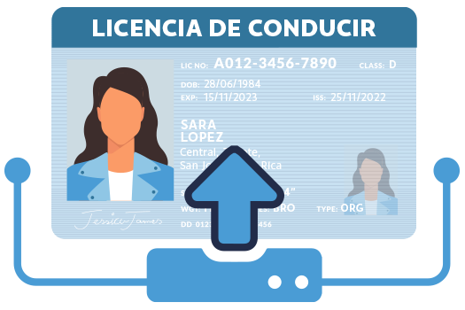
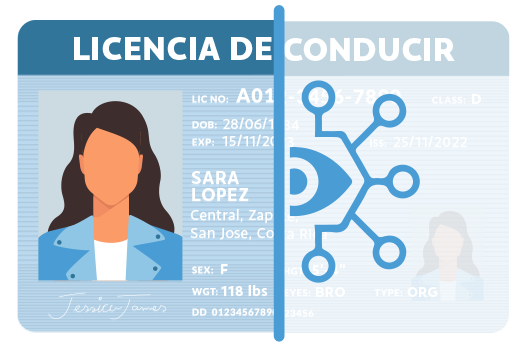
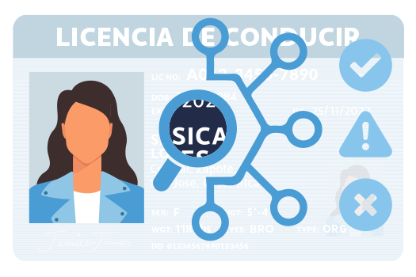

Inglés
Inglés Portugués
PortuguésCumplir con los Requisitos Globales de KYC y AML
Detectar Sintéticas
Sepa con confianza que los documentos son 100 % genuinos con algoritmos avanzados de análisis de riesgo para detectar falsificaciones perfectas, identificaciones sintéticas o falsificaciones profundas en tiempo real.
Más Confianza
Los clientes quieren sentirse seguros y protegidos cuando interactúan en línea. La verificación de documentos hace exactamente eso y les dice a sus clientes que se toma en serio su cuenta y su seguridad.
A Bordo Más
Nuestra verificación de documentos funciona con sus flujos y diseños de incorporación de UIUX personalizados para garantizar que tenga un control completo y cero fricción de verificación para reducir el abandono.
Almacenamiento
El motor de análisis de riesgos de última generación recopila, protege y cifra los datos. Almacene con confianza documentos en un solo lugar sincronizados con perfiles para una fácil revisión.
Análisis de Base de Datos
Confirme y haga coincidir los atributos de identidad con los documentos en una completa base de datos internacional de riesgos.
Flujos de Trabajo Personalizados
Configure e implemente fácilmente su verificación de ID de documentos en cualquier flujo de trabajo de incorporación o cumplimiento.

Extracción
Precisa
Reciba el número de documento, fecha de emisión y verificación de edad con inteligencia humana para mejorar la precisión del fraude.
Cumple con
las Normas
Compile y envíe fácilmente informes para los organismos reguladores de los documentos verificados y todos los análisis de datos vinculados a los perfiles de los clientes.
Nuestra plataforma global procesa documentos en 230 países con cobertura multilingüe y soporte en más de 150 idiomas.
Licencia de Conducir
Pasaporte
Identificación Nacional
Permiso de Residencia
Detección de Vida
Minimiza los falsos positivos y proporciona una prevención de fraude del 99%.
El Problema
Solo en los EE. UU., alguien se convierte en víctima de un fraude de identidad cada 14 segundos. En la UE, una de cada cinco personas ha sufrido un robo de identidad y los niños son 51 veces más vulnerables al robo de identidad que sus padres. Se prevé que las pérdidas por robo de identidad aumenten a $635.4 mil millones para 2023..
Protección de Confianza
Aproveche la biometría de su cliente a través del reconocimiento facial incorporado para confirmar automáticamente a los clientes en tiempo real y realizar un análisis cruzado con los documentos de identificación proporcionados. Todos están respaldados por un híbrido de aprendizaje automático y un motor de reglas de análisis de riesgos para maximizar la precisión del fraude.

Verificación de Documentos sin Problemas
Capture, verifique y administre documentos de identidad en una sola plataforma.

Cargas de Clientes
Flexibilidad para implementar nuestra solución de identificación de documentos en cualquier experiencia de captura de documentos.

Documento Escaneado
Los documentos de identificación se cargan y escanean automáticamente a través de API a través de varios factores de riesgo.

Salida de Riesgo
Reciba información detallada sobre documentos y resultados de análisis de riesgos, incluida una puntuación de riesgo holística.

Gestionar el Riesgo
Nuestro sistema activa automáticamente la diligencia debida cuando la puntuación genera una advertencia o falla.


Expandir a Brasil
Verificación de objetivo CPF ID.
América Latina, uno de los mercados más calientes de Fintech, ha duplicado su tamaño en los últimos tres años, representando el 22,6% del número total de plataformas fintech en todo el mundo. Refuerce su cobertura de verificación de identidad de Brasil hoy.Estándar CPF
Verifique instantáneamente la validez de una identificación de CPF y su ubicación estatal.
FPC Avanzado
Realice una verificación completa de ID de CPF para recuperar el nombre, el número de teléfono y la información de la dirección de los clientes brasileños.
CONTÁCTENOS PARA PRECIOS
Enriquecer la Elaboración de Perfiles y la Mitigación de Riesgos
KYC de varios niveles en un solo punto de conexión de API.
ID Digital
Un conjunto completo de verificaciones KYC de extremo a extremo con flujos de trabajo para confirmar la identidad del cliente automáticamente y en tiempo real.
Autenticación
Las expectativas de los clientes sobre la seguridad de inicio de sesión y pago son altas. Seleccione y elija sus servicios de autenticación para mejorar la seguridad.
Cumplimiento ALD
Cumplimiento basado en datos para la protección contra actividades ilegales como el lavado de dinero, el financiamiento del terrorismo o transacciones fraudulentas con facilidad.
Transacción Inteligente
Proteja los ingresos con controles de identidad continuos, verificaciones transaccionales y análisis de riesgos automatizados y basados en criptografía.